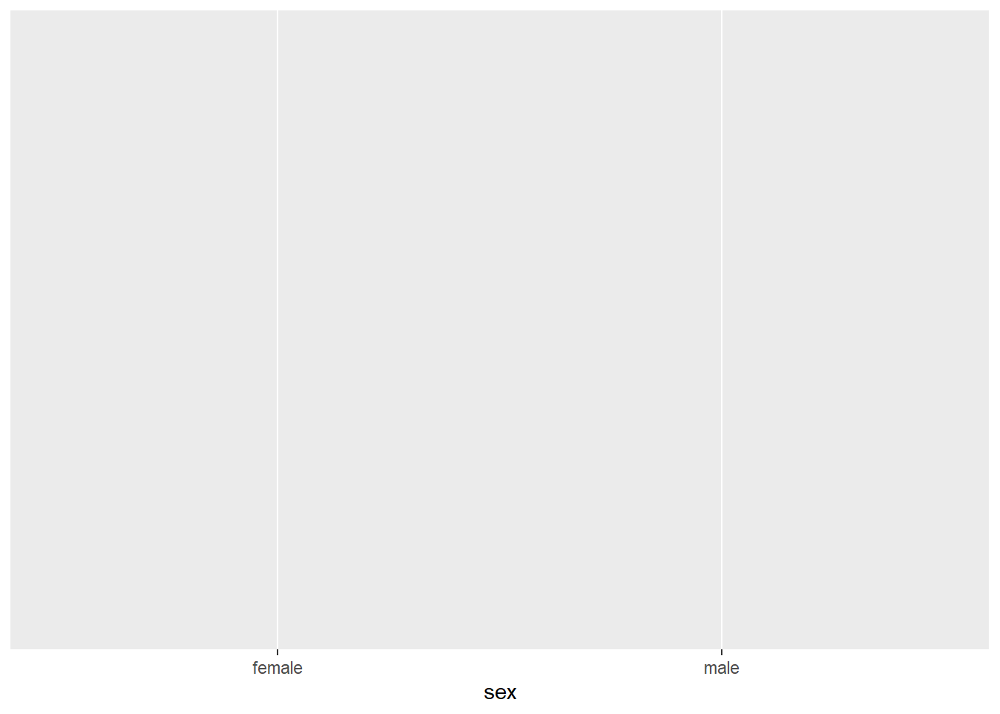
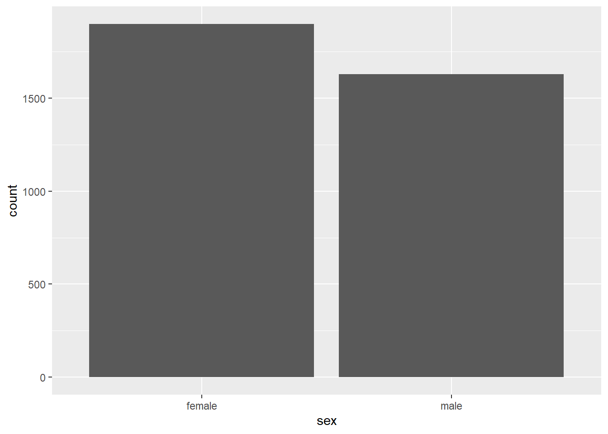
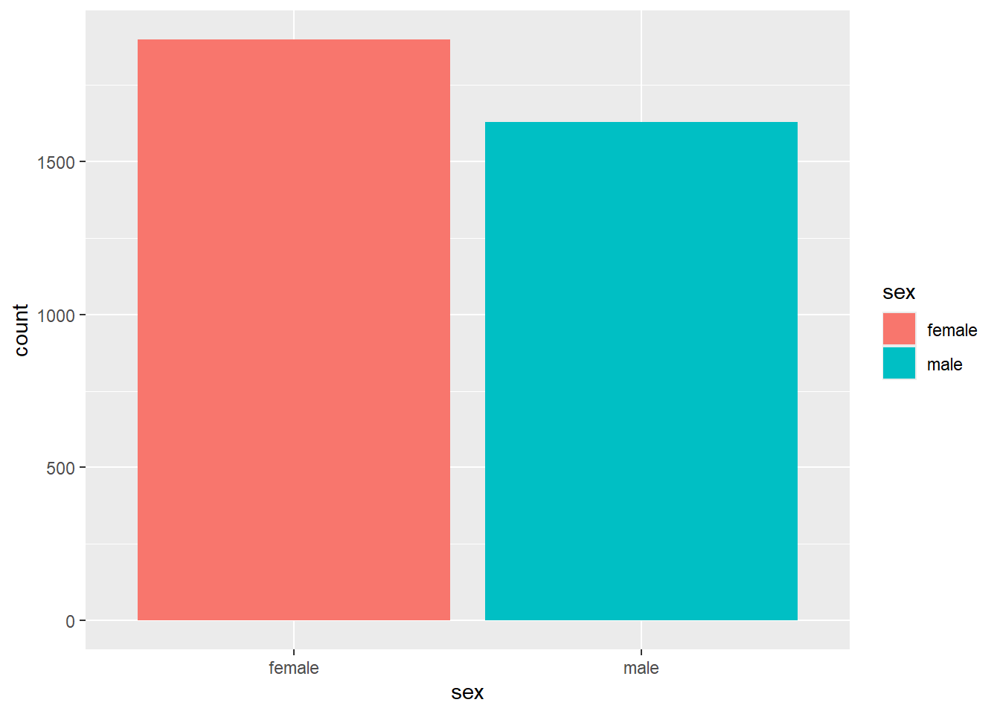
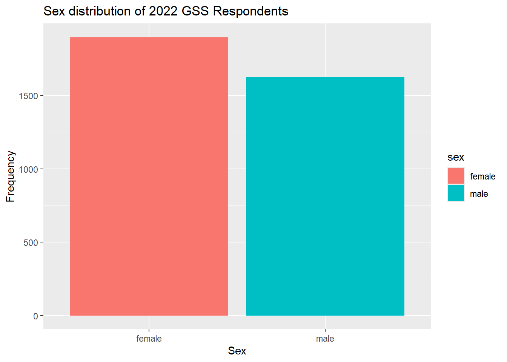
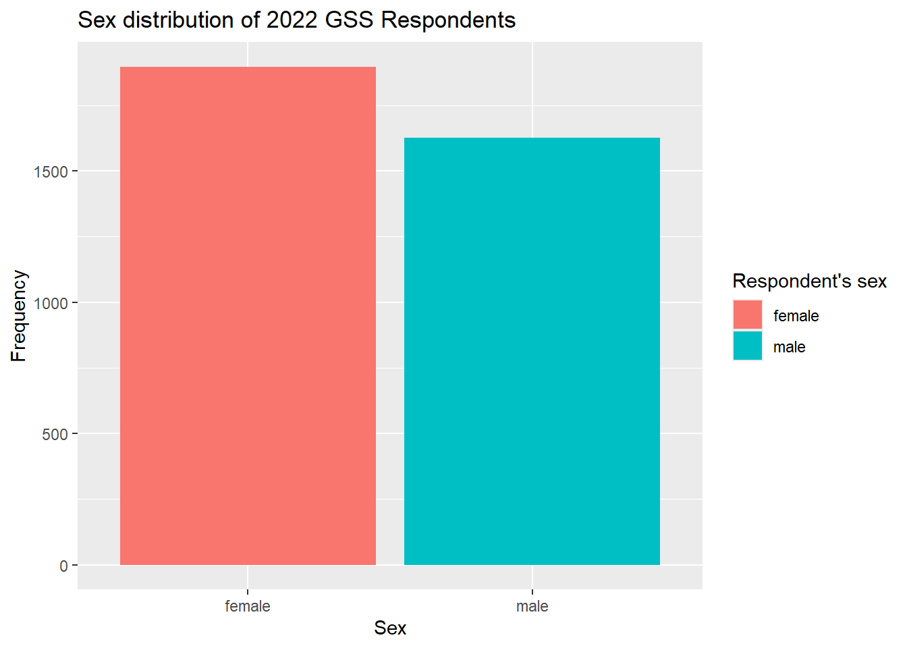
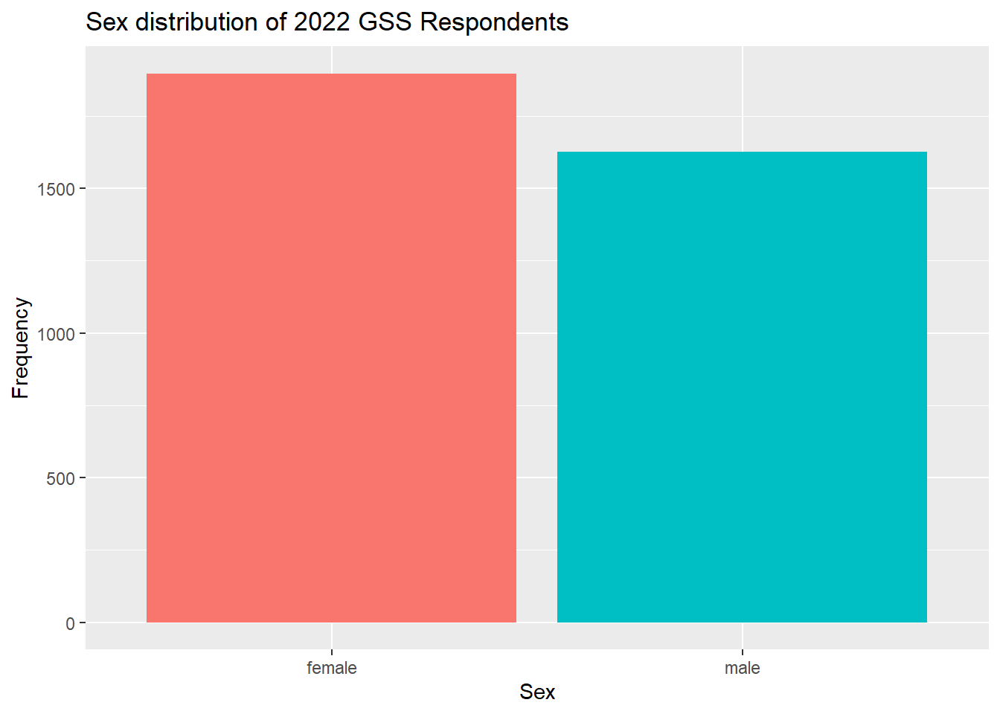
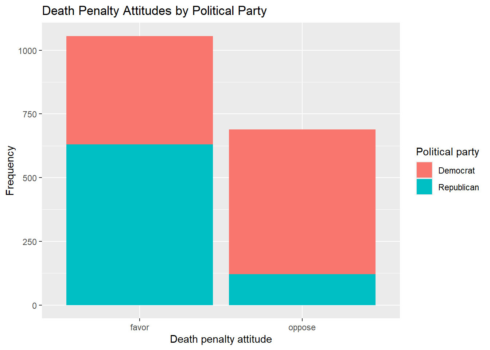
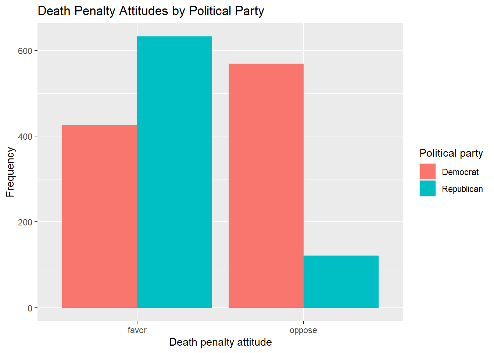

library(tidyverse)
library(janitor)
load("our_gss.rda")8 Plotting and Counting
In this last portion of our in-class lab sessions on quantitative analysis, we’ll learn how to make some familiar visuals in new and exciting ways. For the most part, this will involve learning the graphing package of tidyverse, commonly known as ggplot, as well as gtsummary, a helpful package for producing tables. There are a couple of things to get used to with ggplot, but once you get a handle on its syntax, it will offer simple and extensive customizability that translates across a wide expanse of use cases. Even some of the graphics that we’ve seen in empirical papers for class have been produced using ggplot!
8.1 Setting up our workspace
Because ggplot comes with tidyverse, we just need to load that in like we’ve often done. We’re also going to need janitor, and, as usual, we’ll also pull in our GSS data.
8.2 Figures
Specific to categorical variables, we learned about one key plot type: barplots. We’ll start our foray into ggplot by using it to recreate some figures in this style.
8.2.1 Barplots & Basics of ggplot
The structure of figures made with ggplot is quite regular. The name ‘ggplot’ is actually a reference to the broader idea of a grammar of graphics, and though there are some specifics across the various plot types, we will offer ggplot mostly the same kind of information regardless. It’s certainly not necessary, but if you are curious, you can read some more about the grammar of graphics here
First, ggplot expects that we will give it a dataframe. This is good because it also means that ggplot plays well with the pipe operator.
Next, ggplot needs input for your aesthetic mappings, shortened to aes() within the function. This might sound a little hoighty toighty, but it simply refers to the specification of some key parameters for our figure. We want our data to be visually mapped in a certain sort of way, and this is where we set that up.
The simplest aesthetic mappings we can provide are the variables we want associated with the x & y axes. Let’s try with sex as an example. Because we are making a barplot, our y-axis will reflect the frequency of the values of the y-axis. We’ll see that ggplot can actually automatically count these for us, so we only need to specify the x-axis variable for a barplot in ggplot.
our_gss |>
drop_na(sex) |>
ggplot(
aes(x = sex))
Now, you might be asking yourself: what’s the deal? We only see the labels of the x-axis there.
The syntax of ggplot is often explained by making an analogy with paintings. You start by setting up a basic canvas with your aes() specifications, and then you add on different layers reflecting the shape of your data and various customizations to its appearance.
The first layer we typically add is a geometric object specification—shorted to geom in ggplot language. You can think of this as the place where you tell ggplot what kind of figure you want. There are a great many geoms, and you can read more about the full extent of them here.
In our case, we want a barplot, so we can add geom_bar() as an additional layer. We can simply add each new layer after a ‘+’ operator
our_gss |>
drop_na(sex) |>
ggplot(
aes(x = sex)) +
geom_bar()
Voila! There’s a pretty decent barplot. There are other kinds of statistical summaries we can take advantage of in ggplot, but the default behavior of geom_bar() will calculate the summary counts of the values of the x variable.
Now we tweak a couple things to make these a bit nicer and illustrate some of the perks of ggplot’s customizability.
Let’s add a little color. We can indicate this back up at the aes() layer. This works by adding a ‘fill’ aesthetic, and then we specify a variable. What we do there is tell R that we want the fill-color of the bars to vary on the basis of that variable. So, each bar will be filled with a different color for each response category of sex, in our case.
our_gss |>
drop_na(sex) |>
ggplot(
aes(x = sex, fill = sex)) +
geom_bar()
Neat! This looks much better, and we’ll play around with this more later, but now let’s see how to add some axis & legend labels along with a title. The legend label actually works out fine as it is with sex, but the shorthand variable names often do not translate well as legend titles (imagine if it were ‘realrinc’, for example). So, I’ll show you how to customize it just in case.
For the axis labels and title, we can add the labs layer
our_gss |>
drop_na(sex) |>
ggplot(
aes(x = sex, fill = sex)) +
geom_bar() +
labs(
title = "Sex distribution of 2022 GSS Respondents",
x = "Sex",
y = "Frequency") 
Then we can add the guides layer to customize the legend title for the fill aesthetic.
our_gss |>
drop_na(sex) |>
ggplot(
aes(x = sex, fill = sex)) +
geom_bar() +
labs(
title = "Sex distribution of 2022 GSS Respondents",
x = "Sex",
y = "Frequency") +
guides(fill = guide_legend(title="Respondent's sex"))
Lastly on this point, I’ll also show you how to get rid of the legend entirely. You’ll often want to customize the legend in the fashion I laid out above, but we actually don’t really need it in this case. It’s redundant with the x-axis labels. So, you can always get rid of a legend by adding the guides() layer and simply setting fill to ‘none’.
our_gss |>
drop_na(sex) |>
ggplot(
aes(x = sex, fill = sex)) +
geom_bar() +
labs(
title = "Sex distribution of 2022 GSS Respondents",
x = "Sex",
y = "Frequency") +
guides(fill = "none")
8.2.2 Bivariate Barplots
The fill aesthetic actually allows us to quite easily create a bivariate version of the barplot.
Let’s consider our bivariate analysis from a previous session: cappun and dem_rep.
If you need to recreate dem_rep from partyid, go ahead and run the following code:
our_gss <- our_gss |>
mutate(
partyid_recoded=fct_collapse(partyid,
"Democrat" = c("strong democrat", "not very strong democrat"),
"Republican" = c("strong republican","not very strong republican"),
"Independent" = c("independent, close to democrat", "independent (neither, no response)", "independent, close to republican"),
"Other Party" = c("other party")
)) |>
mutate(dem_rep = fct_recode(
partyid_recoded,
NULL="Other Party",
NULL="Independent"))As a reminder, here is the cross-tab for that conjoint distribution:
| Political Party | ||
|---|---|---|
| Death Penalty Attitude | Democrat | Republican |
| favor | 42.8% (426) | 84.0% (633) |
| oppose | 57.2% (569) | 16.0% (121) |
| Total | 100.0% (995) | 100.0% (754) |
Now, we’ll use our same barplot code from above, but this time we will set our x variable to cappun and swap out the fill aesthetic to dem_rep. This means we want the fill-color of the bars to vary on the basis of the categories in dem_rep. I’ll also add cappun and dem_rep to drop_na() and update the labels & title.
our_gss |>
drop_na(sex, cappun, dem_rep) |>
ggplot(
aes(x = cappun, fill = dem_rep)) +
geom_bar() +
labs(
title = "Death Penalty Attitudes by Political Party",
x = "Death penalty attitude",
y = "Frequency") +
guides(fill = guide_legend(title="Political party"))
Good stuff! This is a stacked barplot and is a common way to display multivariate categorical data. I personally find it a little easier to intrepret when the columns are side-by-side rather than stacked on top of each other, so I’ll show you how to do that too. This just requires setting a position mapping within geom_bar(). We set the position to ‘dodge’, which might sound a little counter-intuitive, which is because it actually has a more general purpose. The idea is that you want overlapping objects to ‘dodge’ one another, which will cause them to appear side by side rather than on top of one another. So, by doing so, we will un-nest our stacked bar charts and have each bar appear adjacent to one another.
our_gss |>
drop_na(sex, cappun, dem_rep) |>
ggplot(
aes(x = cappun, fill = dem_rep)) +
geom_bar(position = "dodge") +
labs(
title = "Death Penalty Attitudes by Political Party",
x = "Death penalty attitude",
y = "Frequency") +
guides(fill = guide_legend(title="Political party"))
Not too shabby. This is a great way to complement the presentation of a bivariate analysis, and it’s also great for quickly getting a sense of the relationship among variables of interest.
8.3 Tables
Now, let’s learn a way to get some pretty snazzy frequency tables and cross-tabs using the gt and gtsummary package, which are designed specifically for quickly producing publication-ready tables.
I’ll load them in below. If you need to install them, you can run install.packages("gtsummary") install.packages("gt")
library(gtsummary)
library(gt)8.3.1 Frequency tables
First, we’ll use gt to convert our tabyl() output from earlier into a cleaned up format that we can view outside of the R console, as well as easily export or even copy to our clipboard.
These will be relatively easy.
First, let’s bring back some familiar code from a previous session.
our_gss |>
tabyl(cappun) |>
adorn_totals(where = "row") |>
adorn_pct_formatting() |>
adorn_rounding(digits = 2) cappun n percent valid_percent
favor 2013 56.8% 60.3%
oppose 1327 37.4% 39.7%
<NA> 204 5.8% -
Total 3544 100.0% 100.0%Here is our frequency table for cappun using tabyl(). There’s one more thing we need to do before we bring in gt.
Remember that we can save this tabyl() output as an object. Let’s do that again now. We’ll save it as an object called our_tab.
our_tab <- our_gss |>
tabyl(cappun) |>
adorn_totals(where = "row") |>
adorn_pct_formatting() |>
adorn_rounding(digits = 2)This table has all the right info we need, but it would be nicer if we didn’t have the ‘cappun’ shorthand for the variable name. The other columns could be capitalized, and we could also stand to lose the underscore in ‘valid_percent’.
The tabyl() function actually produces a data frame, which we have just saved a moment ago. Let’s take a look at the column names like we did before, and then change these to look a little nicer.
# Check the column names
colnames(our_tab)[1] "cappun" "n" "percent" "valid_percent"# Overwrite the column names
colnames(our_tab) <- c("Death Penalty Approval", "Frequency", "Percent", "Valid Percent")# Check that it worked
our_tab Death Penalty Approval Frequency Percent Valid Percent
favor 2013 56.8% 60.3%
oppose 1327 37.4% 39.7%
<NA> 204 5.8% -
Total 3544 100.0% 100.0%Now, all we have to do is pipe our_tab into the gt() function
our_tab <- our_tab |>
gt()
# Check it out
our_tab| Death Penalty Approval | Frequency | Percent | Valid Percent |
|---|---|---|---|
| favor | 2013 | 56.8% | 60.3% |
| oppose | 1327 | 37.4% | 39.7% |
| NA | 204 | 5.8% | - |
| Total | 3544 | 100.0% | 100.0% |
This is not too bad for our purposes. This cleans the table up a hair while converting it into a format that we can see in the RStudio file viewer. This also allows us to copy it to our clipboard or export it as an image file.
8.3.2 Contingency tables
For contingency tables, we will use an extension of the gt package called gtsummary. I’ll note that this package can be a little idiosyncratic compared to some of the ones we’ve learned about already, and you can really get into the weeds with it. But I’ll try to focus us here on just the things from which we can really get a lot of value. can also make a quick and easy contingency table for bivariate analysis. Let’s re-create our cappun x dem_rep table.
There’s a nifty function called tbl_cross() That includes a bunch of preset options intended for cross-tabs.
Remember to always provide your dependent variable to the ‘row’ input.
our_gss |>
drop_na(cappun, dem_rep) |>
tbl_cross(
row = cappun,
col = dem_rep,
percent = "column",
margin = c("column", "row"),
label = list(
cappun = "Death Penalty Attitude",
dem_rep = "Political Party"
))
Political Party
|
Total | ||
|---|---|---|---|
| Democrat | Republican | ||
| Death Penalty Attitude | |||
| favor | 426 (43%) | 633 (84%) | 1,059 (61%) |
| oppose | 569 (57%) | 121 (16%) | 690 (39%) |
| Total | 995 (100%) | 754 (100%) | 1,749 (100%) |
So, for tbl_cross() we provide our row variable and our column variable. If we set percent = "column", we will get percentages for each cell that will total across the rows—this is what we want. For margin = c("column", "row"), we’re telling the function that we want totals for both columns and rows. Lastly, we give some better labels for our variables.
8.3.3 Chi-squared test
Now, a really neat feature of tbl_summary() is that it will automatically detect the type of variables that we have, and it will perform an appropriate statistical test. There’s a lot of customization that you can do here, but this will work great out of the box for us.
All we have to do is pipe the command we just produced into add_p(), which will automatically calculate a p-value using a relevant statistical test.
our_gss |>
drop_na(cappun, dem_rep) |>
tbl_cross(
row = cappun,
col = dem_rep,
percent = "column",
margin = c("column", "row"),
label = list(
cappun = "Death Penalty Attitude",
dem_rep = "Political Party"
)) |>
add_p()
Political Party
|
Total | p-value1 | ||
|---|---|---|---|---|
| Democrat | Republican | |||
| Death Penalty Attitude | <0.001 | |||
| favor | 426 (43%) | 633 (84%) | 1,059 (61%) | |
| oppose | 569 (57%) | 121 (16%) | 690 (39%) | |
| Total | 995 (100%) | 754 (100%) | 1,749 (100%) | |
| 1 Pearson’s Chi-squared test | ||||
Very neat! This automatically recognized that we have categorical variables, ran a chi-squared test, and reported the p-value. Note that it doesn’t give the actual chi-squared value by default, but that information is in there. We can manually add a column like so:
our_gss |>
drop_na(cappun, dem_rep) |>
tbl_cross(
row = cappun,
col = dem_rep,
percent = "column",
margin = c("column", "row"),
label = list(
cappun = "Death Penalty Attitude",
dem_rep = "Political Party"
)) |>
add_p() |>
modify_header(statistic ~ "Chi-square value")
Political Party
|
Total | Chi-square value1 | p-value1 | ||
|---|---|---|---|---|---|
| Democrat | Republican | ||||
| Death Penalty Attitude | 304 | <0.001 | |||
| favor | 426 (43%) | 633 (84%) | 1,059 (61%) | ||
| oppose | 569 (57%) | 121 (16%) | 690 (39%) | ||
| Total | 995 (100%) | 754 (100%) | 1,749 (100%) | ||
| 1 Pearson’s Chi-squared test | |||||
Good stuff. I’ll point out that we use the ~ symbol above, but don’t worry too much about that. It’s one of the peculiarities I alluded to about gtsummary. Just know that we have to use ~ there. Otherwise, there’s lots of great detail here, so this is pretty much good to go.
8.3.4 Elaboration Model
Lastly, this also gives us an easy way to automatically produce a 3-way cross-tab for multivariate analysis. We’ll need to change a couple of things around, but this can be done without too much work in gtsummary.
In our set up here, we have cappun as our dependent variable and dem_rep as our independent variable. Let’s add sex as a test variable, and see whether sex has any effect on the relationship we have observed between death penalty attitudes and political party.
For this, we need the tbl_strata() function.
our_gss |>
select(cappun, sex, dem_rep) |>
drop_na(cappun, sex, dem_rep) |>
tbl_strata(
strata = sex,
.tbl_fun =
~ .x |>
tbl_cross(
row = cappun,
col = dem_rep,
percent = "column",
margin = c("column", "row"),
label = list(
cappun = "Death Penalty Attitude",
dem_rep = "Political Party"
)) |>
add_p()
)
female
|
male
|
|||||||
|---|---|---|---|---|---|---|---|---|
| Democrat | Republican | Total | p-value1 | Democrat | Republican | Total | p-value1 | |
| Death Penalty Attitude | <0.001 | <0.001 | ||||||
| favor | 244 (41%) | 276 (80%) | 520 (55%) | 182 (46%) | 354 (88%) | 536 (67%) | ||
| oppose | 350 (59%) | 71 (20%) | 421 (45%) | 218 (55%) | 50 (12%) | 268 (33%) | ||
| Total | 594 (100%) | 347 (100%) | 941 (100%) | 400 (100%) | 404 (100%) | 804 (100%) | ||
| 1 Pearson’s Chi-squared test | ||||||||
This is starting to sprawl a little, but it’s basically the same command as before, except that now we have put our tbl_cross() command inside of the tbl_strata().
tbl_strata, first takes the ‘strata’ input, which is where we indicate our test variable. It’s the variable by which we want to stratify our data. The effect of strata = sex is somewhat similar to group_by() from tidyverse—it groups the data by our test variable.
.tbl_fun = ~.x probably looks a little strange. This gets a little into the weeds, so don’t worry about it too much, but I’ll give a little context.
.tbl_fun is shorthand for “table function”, and .x is an R-specific placeholder for function inputs. Essentially, we are saying “group the data by our strata variable, and then pass that stratified data into another function of my choosing.”
Then, we can just give our tbl_cross() function from before, and this will be calculated according to the grouping structure of the test variable we provide.
Now, as an exercise, let’s think about what we have here.
We have our original relationship predicting death-penalty attitudes based on political affiliation. But now we can see this relationship for both men and women. The female group has 941 respondents and the male group has 804.
If we look at the percentages for both the male & female groups, they are relatively similar and the basic relationship is about the same: Democrats are more likely to oppose the death penalty and less likely to favor the death penalty, regardless of sex. Not only this, but we can see that a chi-squared test has been run for both the male and female subgroups. Both of these tests returned statistically significant p-values, as we can see in the table.
So, this would be a case of replication. We have replication when our zero-order relationship remains statistically significant after introducing our test variable, and the nature of the relationship does not change. In this case, we observed a statistically significant relationship between political affiliation and death-penalty attitudes. After we added sex as a test variable, this original relationship remained statistically significant across the two response categories of sex. If the percentages had been markedly different across males and females, we would say that this was specification, as that would suggest that—even if political affiliation is associated with death penalty attitudes—the relationship is different for men and women.